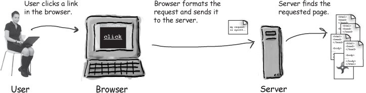
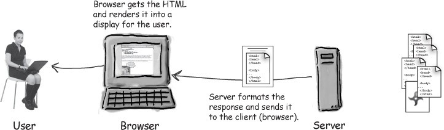
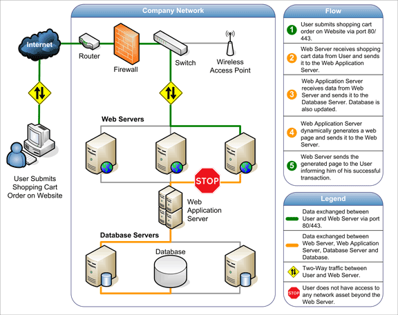
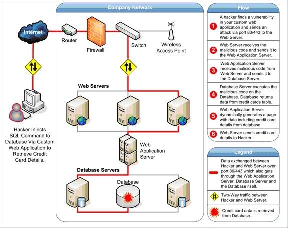

WEB SERVER, WEB CLIENT, WEB APPLICATIONS
DEFINITION
A web server in its simplest sense is simply what store, process and delivers web pages to clients (Beal, V. n.d.). Or to illustrate, imagine inputting a url(uniform resource locator) in your browser and once you press ‘Enter’ the website will immediately boot up whenever you are and wherever you are. So, in this process, once you inputted a url, it will send a request in the server. The server will then look through the data stored on it and find if it’s in there. If it is, it will send back the requested page. If it isn’t, it will send back an error message or the typical ‘Site not found error.’

For a more technical way, the browser will break down the url into three parts.
- The protocol (http://)
- The server name (www.google.com)
- The file name (dummy.htm)
The browser will communicate with a domain name. Afterwards, it will be translated to an IP address. The translated url will then be used to connect to the server. The browser then formed a connection to the server by that IP address.
Following the protocol, the server will then send a get request to the server and asking for the file that you are looking for. Once, it finds that content it will send the HTML text for the browser to interpret. It will read the HTML tags and format the page in your screen. (Brain, M. n.d.)
ARCHITECTURE
The web server architecture follows two different approaches:
- Concurrent Approach
- Single-Process-Event-Driven Approach
The server takes multiple requests at the same time.
The server takes only single requests at a time.
The Concurrent Approach
This approach can be achieved in three ways:
- Multi-process
- Multi-threaded
- Hybrid Method
This is a process wherein a parent process starts several single-threaded child processes. Then, the parent process will distribute each incoming request among the children processes. The parent process will be in charge for loading and monitoring while the child will only be focused on a single task.
A parent process, unlike the multi-process, creates multiple single-threaded process.
This is a combination of the first two approaches.
EXAMPLES OF WEB SERVERS:
- Apache HTTP Server
- Internet Information Services
- Lighttpd
- Sun Java System Web Server
- Jigsaw Server
DEFINITION
The web client typically refers to the browser and may also refer to plug-ins that support special services to the site. It can also refer to whatever a person is using to access a website like handheld devices or electronic devices. (Computer language company, Inc. n.d.)
This is also known as a thin client because it doesn’t handle the heavy work, which is the work of the server. (technopedia. n.d.)
The client is also referred to as either the human user or the browser. (technopedia. n.d.)
The main purpose of the web client is to search for the content in the world wide web and display it in the shape of a webpage, image, audio and the like as long as it is available.
The process is shown by the images below.
 EXAMPLES:
Chrome, Safari, Opera Mini, Firefox (or any other common browsers)
DEFINITION
This is an application that runs on a web server and must be accessed through a web browser. A web application can run through any kind of browsers. In a user standpoint, it shows a more consistent user interface because the appearance is dependent on the browser. (Rouse, M. n.d.)
As long as a website component performs some function that can be used then it qualifies as a web application.
From a technical point of view, the web application is a highly programmable environment that allows mass customization through the immediate deployment of diverse applications that can be accessed by billions and billions of people. (acunetix. n.d.)
Web applications are computer programs that allows the user to retrieve and send data to a database from the internet. This is always achieved by the user using their preferred browser. The data is then presented to the user in specific formats(such as HTML using CSS) through the web application through a web server. (acunetix. n.d.)
HOW IT WORKS AND ITS ISSUES
 WEB SERVER
1990
Berners-Lee wrote two programs: (1) World Wide Web browser, (2) the world’s first web server, later known as CERN httpd which ran on NeXTSTEP.
WEB APPLICATION
The Web Applications have been around since the Web gained mainstream popularity. In the future, some common apps like the Microsoft Office are now going web or leaning more to cloud given the fact that data can now be stored to a database. This is also convenient for people to be able to access their data anywhere and anytime. (Nations, D. 2016)
Beal, V. (n.d.). Web server. Retrieved from http://www.webopedia.com/TERM/W/Web_server.html
Whatismyipaddress.com (n.d.). Web server. Retrieved from http://whatismyipaddress.com/web-server
Brain, M. (n.d.). How web servers work. Retrieved from http://computer.howstuffworks.com/web-server.htm
HowStuffWorks. Untitled Image. Retrieved from http://computer.howstuffworks.com/web-server1.htm
Tutorialspoint.com (n.d.). Web server. Retrieved from https://www.tutorialspoint.com/internet_technologies/web_servers.htm
Computer Language Inc. (n.d.). Web client definition. Retrieved from http://www.pcmag.com/encyclopedia/term/54284/web-client
Technopedia.com(n.d.). Web client. Retrieved from https://www.techopedia.com/definition/24352/web-client-j2ee
Client Server Process. Retrieved from: https://www.safaribooksonline.com/library/view/head-first-servlets/9780596516680/ch01s03.html
Bates, et.al. (2008). Head First Servlets and JSP, 2nd Edition. Retrieved from https://www.safaribooksonline.com/library/view/head-first-servlets/9780596516680/ch01s03.html
Rouse, M. (n.d.). Web application (web app). Retrieved from https://www.safaribooksonline.com/library/view/head-first-servlets/9780596516680/ch01s03.html
Acutenix.com(n.d.). Web applications: What are they? What of them? Retrieved from http://www.acunetix.com/websitesecurity/web-applications/
Nations, D. (2016). Improve your understanding of web applications. Retrieved from https://www.lifewire.com/what-is-a-web-application-3486637
Untitled image. Retrieved from http://www.acunetix.com/websitesecurity/web-applications/
Untitled image. Retrieved from http://www.acunetix.com/websitesecurity/web-applications/